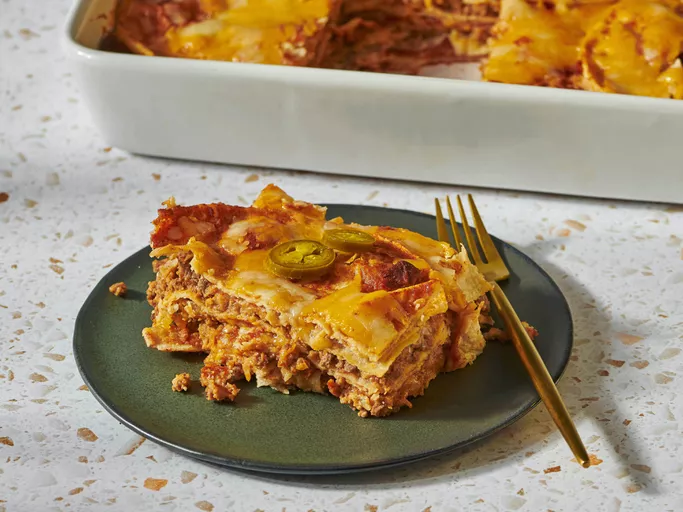

Enchilada Casserole

Description
Definitely delicious, if not authentic.
Ingredients
- Enchilada sauce packet
- Tomato paste
- Water
- Ground beef
- Garlic Salt
- Onion Powder
- Refried Beans
- Corn Tortillas
- Shredded cheese
Instructions
- Get the shit. Preheat 375.
- Mix the sauce packet with water.
- Cook the beef with garlic and onion, drain.
- Mix refried beans and sauce with beef.
- Dip tortillas in sauce and line casserole dish.
- Spoon half the meet and half the cheese on top.
- Cover with another layer of dipped tortillas, beef mixure, and cheese.
- Cover with more saucy tortillas and cheese.
- Bake covered for 20 minutes.
Home